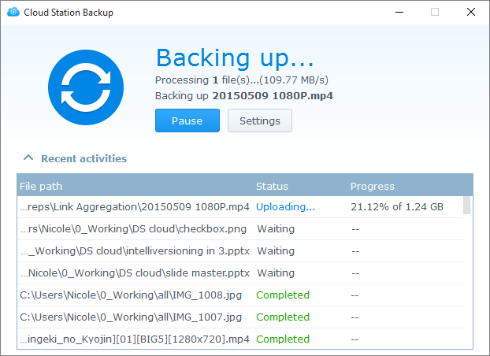

Overview
Cloud Station Server is not only a sophisticated cross-platform syncing software, users can use it as a smarter means of backing up their personal computers. A real-time backup solution, Cloud Station Backup is instantaneous and bandwidth-saving, offering better protection with up to 32 historic versions of a single file.
Set up Cloud Station Server on Synology NAS
- Go to Package Center, find Cloud Station Server, and then click Install.
- Launch Cloud Station Server.
- Go to Overview and click Download Now under Cloud Station Backup. (You can also download Cloud Station Backup from the Synology Download Center.)
- Launch the installer on your computer and follow the instructions to install Cloud Station Backup.
- After installation, run Cloud Station Backup on your computer. Click Start Now.
- Enter the address for the Synology NAS running Cloud Station Server (or QuickConnect ID), username, and password. (You can also click the search icon on the right, and Cloud Station Backup will automatically search for other Synology NAS within your LAN). Click Next.
- Select your backup source and uncheck any subfolders you don't want to sync.
- Select a folder on your Synology NAS by clicking Select. Cloud Station Backup will create a backup folder in your selected destination with your computer name.
- Click Backup rules if you wish to set sync filters or rules.
- Click Next to review your backup settings, then click Done.
- You can view your backup progress in the main app. 


Download or restore a previous version of a synced file on from Cloud Station Server
- Go to Cloud Station Server > Version History and locate the file or folder you wish to restore.
- Select the file you want to retrieve and click Action. Click Browse previous versions. If a file has been accidentally deleted or removed on your computer, you can click Restore to restore it.
- Select the version of the file you want to download and click Download. Or, if you are sure you want the selected version restored, click Restore and it will overwrite your current version.


5. Further protection of your data
For more ways to protect and back up your data, click here to see tutorials detailing other backup services offered on DSM.